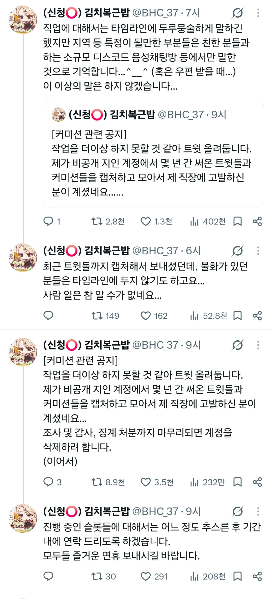
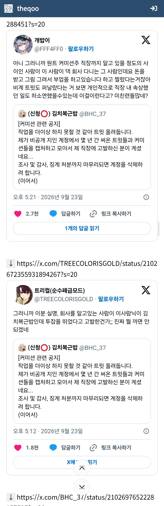
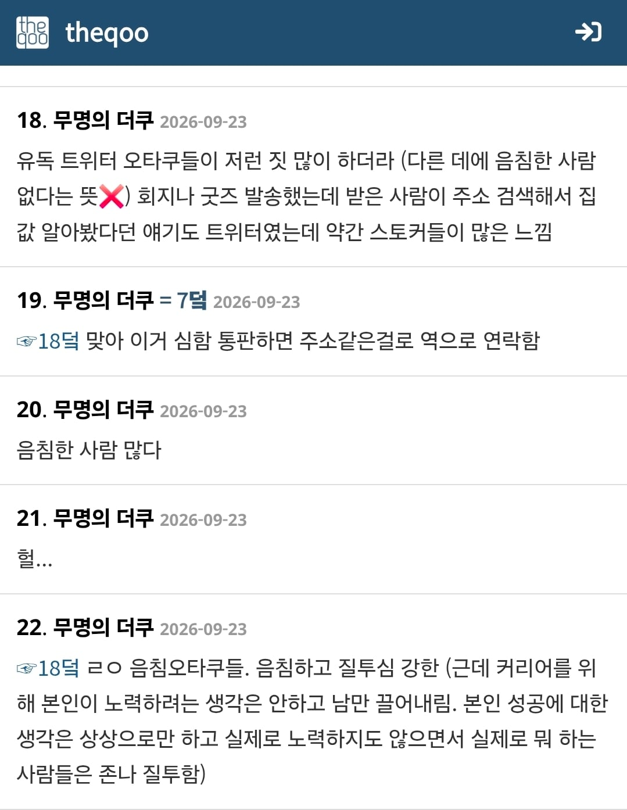
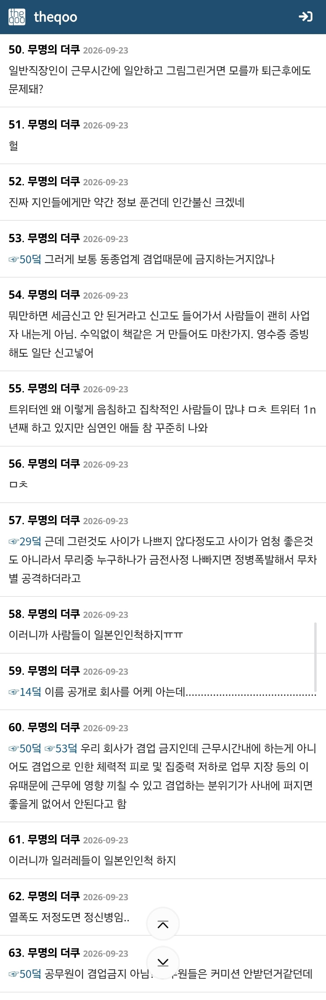
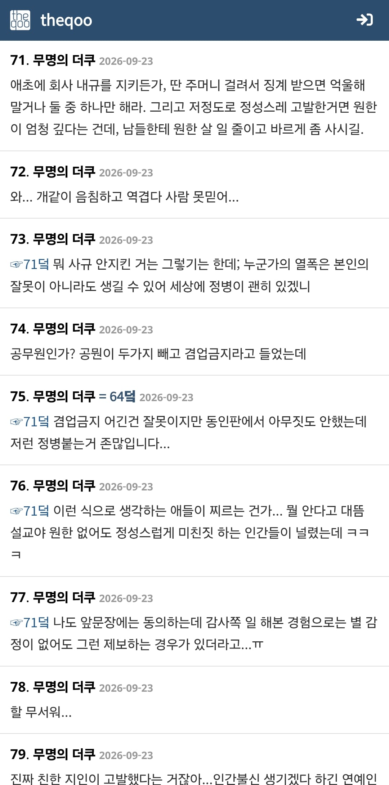
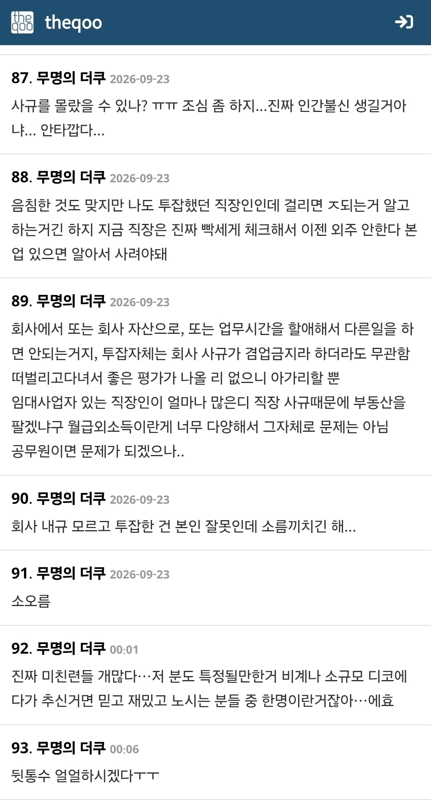
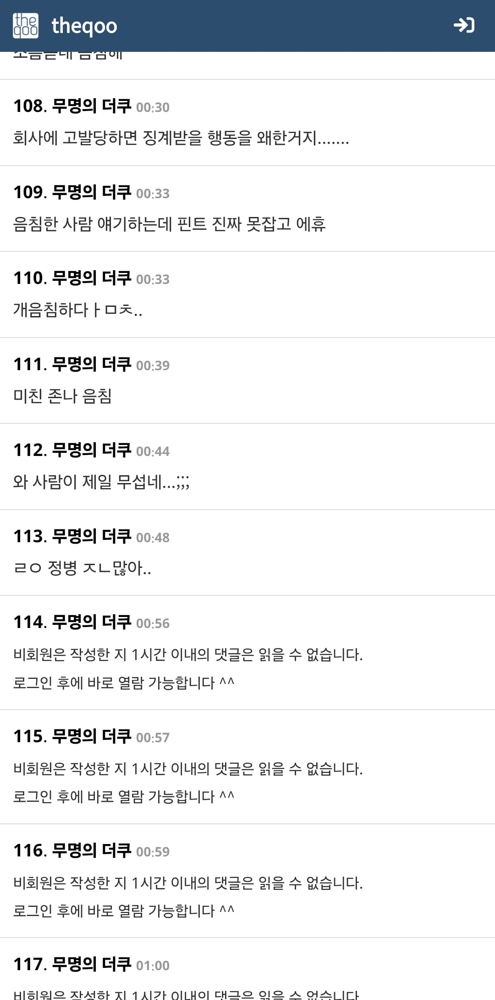

https://theqoo.net/hot/4354175655
더쿠애들 공감능력 발휘해서 어뜨케ㅠㅠㅠ하면서도
중간중간 현실적인 문제점 파악해서 말해주는 애들도 있음
공지내용이야 저 위에 있는내용이고
더쿠애들 중간중간에 시기질투로 신고당한거라는 말 보고
얼마나 잘그리나 궁금했음
못그리는건 아닌데
누군가의 시기질투를 받을정도........?
뒷계정이 문제같은데 ㄷㄷㄷ
'뒷계'에다가 회사가 특정될만큼 회사를 언급하고
회사나 특정이슈에 대해 선넘는 발언하다가
사이 틀어진 사람이 그걸로 찌른거같은데
개붕이들도 인터넷에 뭐 올릴땐
사담은 최대한 자제하고 올리는게 좋을듯
저분은 뭐 드러난게 없으니까
어떤발언인지는 본인만 아실거같고
이제 저런 일들 늘어날듯
그동안 신나서 페미발언한 페미일러레들 코스어들
좀 잘나가는순간 바로 저격당할듯
머리 좀 있으면 미리미리 세탁기 돌려야지뭐
난 그래서 양지 계정하고 커뮤 똥글 배설용 계정 철저하게 분리함 ㅋㅋ